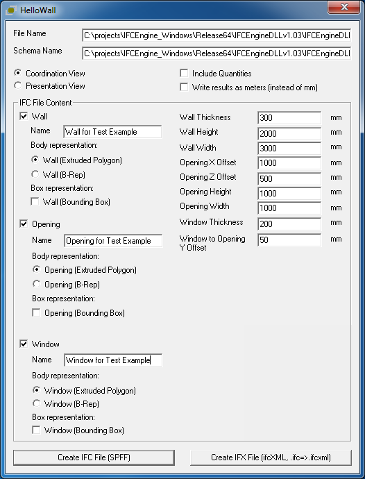
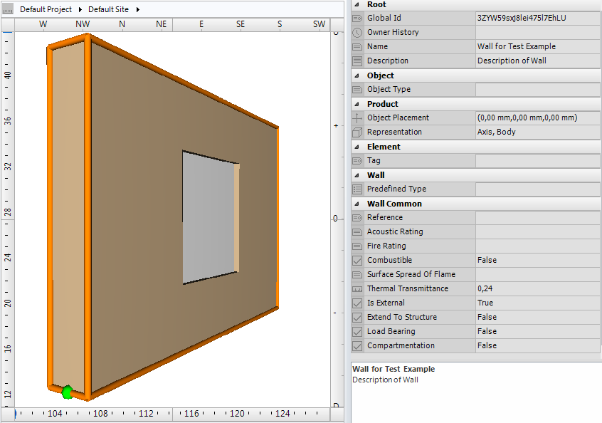

Link to this page
Link to this pageThe example demonstrates how a window can be placed inside a wall. The basic format of the wall is 3 meter length and 2 meter height with a thickness of 300 mm. The window has a size of 1x1 meter and is placed exactly in the middle of the wall.
To insert a window or door in a wall it is required to create an opening. The following entities are relevant:
The three entity instances have to be connected in 2 different ways
Each physical object has a placement. The placement is represented by IfcLocalPlacement and can be relative to an IfcLocalPlacement of another physical object (in case of aggregation, feature or filling relation) or of an spatial structure element. This process of local placements is recursive. IfcWall, IfcOpeningElement and IfcWindow each have their own IfcLocalPlacement, however the IfcLocalPlacement of IfcWindow is defined relatively to the IfcLocalPlacement of IfcOpeningElement and the IfcLocalPlacement of IfcOpeningElement is defined relatively to the IfcLocalPlacement of IfcWall.
The IfcWall and IfcOpeningElement are connected via the objectified relation IfcRelVoidsElement. The IfcRelVoidsElement is connected with the wall via the relationship RelatingBuildingElement and to the opening element via the relationship RelatedOpeningElement. Through the inverse relationships it is possible to traverse from wall to opening element and vice versa.
The IfcOpeningElement and IfcWindow are connected via the objectified relation IfcRelFillsElement. The IfcRelFillsElement is connected with the opening element via the relationship RelatingOpeningElement and to the window via the relationship RelatedBuildingElement. Through the inverse relationships it is possible to traverse from opening element to window and vice versa.
|
 |
The Figure E15 shows the parameters used for creating the example data set. |
|
Figure E15 — Parameters of wall, opening and window |
|
 |
The Figure E16 shows the geometric representation of the example data set. |
|
Figure E16 — Geometric representation of wall, opening and window |